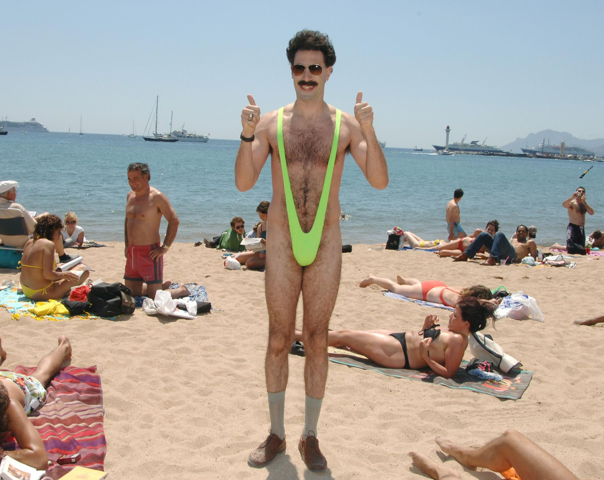

Who is Borat?
According to Wikipedia, Borat is a 2006 mockumentary black comedy film directed by Larry Charles and starring Sacha Baron Cohen. Baron Cohen plays the leading role of Borat Sagdiyev, a fictional Kazakhstani journalist who travels through the United States to make a documentary which features real-life interactions with Americans.
Why was the release of 'Borat' controversial?
Controversy surrounded the film prior to its release, and after the film's release, some participants spoke against, and even sued, its creators. It was denounced by the government of Kazakhstan and was banned in almost all Arab countries. The film was released on DVD in March 2007.